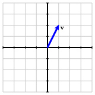

Section 4.1 An introduction to eigenvalues and eigenvectors
¶This section introduces the concept of eigenvalues and eigenvectors and offers an example that motivates our interest in them. The point here is to develop an intuitive understanding of eigenvalues and eigenvectors and explain how they can be used to simplify some problems that we have previously encountered. In the rest of this chapter, we will develop this concept into a richer theory and illustrate its use with more meaningful examples.
Preview Activity 4.1.1.
Before we introduce the definition of eigenvectors and eigenvalues, it will be helpful to remember some ideas we have seen previously.
Suppose that \(\vvec\) is the vector shown in the figure. Sketch the vector \(2\vvec\) and the vector \(-\vvec\text{.}\)
State the geometric effect that scalar multiplication has on the vector \(\vvec\text{.}\) Then sketch all the vectors of the form \(\lambda \vvec\) where \(\lambda\) is a scalar.
-
State the geometric effect of the matrix transformation defined by
\begin{equation*} \left[\begin{array}{rr} 3 \amp 0 \\ 0 \amp -1 \\ \end{array}\right]\text{.} \end{equation*} -
Suppose that \(A\) is a \(2\times 2\) matrix and that \(\vvec_1\) and \(\vvec_2\) are vectors such that
\begin{equation*} A\vvec_1 = 3 \vvec_1, \qquad A\vvec_2 = -\vvec_2\text{.} \end{equation*}Use the linearity of matrix multiplication to express the following vectors in terms of \(\vvec_1\) and \(\vvec_2\text{.}\)
\(A(4\vvec_1)\text{.}\)
\(A(\vvec_1 + \vvec_2)\text{.}\)
\(A(4\vvec_1 -3\vvec_2)\text{.}\)
\(A^2\vvec_1\text{.}\)
\(A^2(4\vvec_1 - 3\vvec_2)\text{.}\)
\(A^4\vvec_1\text{.}\)
Subsection 4.1.1 A few examples
We will now introduce the definition of eigenvalues and eigenvectors and then look at a few simple examples.
Definition 4.1.1.
Given a square \(n\times n\) matrix \(A\text{,}\) we say that a nonzero vector \(\vvec\) is an eigenvector of \(A\) if there is a scalar \(\lambda\) such that
The scalar \(\lambda\) is called the eigenvalue associated to the eigenvector \(\vvec\text{.}\)
At first glance, there is a lot going on in this definition so let's look at an example.
Example 4.1.2.
Consider the matrix \(A = \left[\begin{array}{rr} 7 \amp 6 \\ 6 \amp -2 \\ \end{array}\right]\) and the vector \(\vvec=\twovec{2}{1}\text{.}\) We find that
In other words, \(A\vvec = 10\vvec\text{,}\) which says that \(\vvec\) is an eigenvector of the matrix \(A\) with associated eigenvalue \(\lambda = 10\text{.}\)
Similarly, if \(\wvec = \twovec{-1}{2}\text{,}\) we find that
Here again, we have \(A\wvec = -5\wvec\) showing that \(\wvec\) is an eigenvector of \(A\) with associated eigenvalue \(\lambda=-5\text{.}\)
Activity 4.1.2.
This definition has an important geometric interpretation that we will investigate here.
Suppose that \(\vvec\) is a nonzero vector and that \(\lambda\) is a scalar. What is the geometric relationship between \(\vvec\) and \(\lambda\vvec\text{?}\)
Let's now consider the eigenvector condition: \(A\vvec = \lambda\vvec\text{.}\) Here we have two vectors, \(\vvec\) and \(A\vvec\text{.}\) If \(A\vvec = \lambda\vvec\text{,}\) what is the geometric relationship between \(\vvec\) and \(A\vvec\text{?}\)
-
The sliders in the diagram below allow you to choose a matrix \(A\).
The vector \({\mathbf v}\) is shown in red and may be varied by clicking
in the head of the vector. The vector \(A{\mathbf v}\) is then shown in
gray.
Choose the matrix \(A= \left[\begin{array}{rr} 1\amp 2 \\ 2\amp 1 \\ \end{array}\right] \text{.}\) Move the vector \(\vvec\) so that the eigenvector condition holds. What is the eigenvector \(\vvec\) and what is the associated eigenvalue?
By algebraically computing \(A\vvec\text{,}\) verify that the eigenvector condition holds for the vector \(\vvec\) that you found.
If you multiply the eigenvector \(\vvec\) that you found by \(2\text{,}\) do you still have an eigenvector? If so, what is the associated eigenvalue?
Are you able to find another eigenvector \(\vvec\) that is not a scalar multiple of the first one that you found? If so, what is the eigenvector and what is the associated eigenvalue?
Now consider the matrix \(A = \left[\begin{array}{rr} 2 \amp 1 \\ 0 \amp 2 \\ \end{array}\right] \text{.}\) Use the diagram to describe any eigenvectors and associated eigenvalues.
Finally, consider the matrix \(A = \left[\begin{array}{rr} 0 \amp -1 \\ 1 \amp 0 \\ \end{array}\right] \text{.}\) Use the diagram to describe any eigenvectors and associated eigenvalues. What geometric transformation does this matrix perform on vectors? How does this explain the presence of any eigenvectors?
Let's consider the ideas we saw in the activity in some more depth. To be an eigenvector of \(A\text{,}\) the vector \(\vvec\) must satisfy \(A\vvec = \lambda\vvec\) for some scalar \(\lambda\text{.}\) This means that \(\vvec\) and \(A\vvec\) are scalar multiples of one another, which means they must lie on the same line.
Consider now the matrix \(A = \left[\begin{array}{rr} 1 \amp 2 \\ 2 \amp 1 \\ \end{array}\right] \text{.}\) On the left of Figure 4.1.3, we see that \(\vvec=\twovec{1}{0}\) is not an eigenvector of \(A\) since the vectors \(\vvec\) and \(A\vvec\) do not lie on the same line. On the right, however, we see that \(\vvec=\twovec{1}{1}\) is an eigenvector. In fact, \(A\vvec\) is obtained from \(\vvec\) by stretching \(\vvec\) by a factor of \(3\text{.}\) Therefore, \(\vvec\) is an eigenvector of \(A\) with eigenvalue \(\lambda = 3\text{.}\)
It is not difficult to see that any multiple of \(\twovec{1}{1}\) is also an eigenvector of \(A\) with eigenvalue \(\lambda = 3\text{.}\) Indeed, we will see later that all the eigenvectors associated to a given eigenvalue form a subspace of \(\real^n\text{.}\)
In Figure 4.1.4, we see that \(\vvec=\twovec{-1}{1}\) is also an eigenvector with eigenvalue \(\lambda =-1\text{.}\)
The interactive diagram we used in the activity is meant to convey the fact that the eigenvectors of a matrix \(A\) are special vectors. Most of the time, the vectors \(\vvec\) and \(A\vvec\) appear somewhat unrelated. For certain vectors, however, \(\vvec\) and \(A\vvec\) line up with one another. Something important is going on when that happens so we call attention to those vectors by calling them eigenvectors. For these vectors, the operation of multiplying by \(A\) reduces to the much simpler operation of scalar multiplying by \(\lambda\text{.}\) The reason eigenvectors are important is because it is extremely convenient to be able to replace matrix multiplication by scalar multiplication.
Eigen is a German word that can be interpreted as meaning “characteristic”. As we will see, the eigenvectors and eigenvalues of a matrix \(A\) give an important characterization of the matrix.
Subsection 4.1.2 The usefulness of eigenvalues and eigenvectors
¶In the next section, we will introduce an algebraic technique for finding the eigenvalues and eigenvectors of a matrix. Before doing that, however, we would like to discuss why eigenvalues and eigenvectors are so useful.
Let's continue looking at the example \(A = \left[\begin{array}{rr} 1 \amp 2 \\ 2 \amp 1 \\ \end{array}\right] \text{.}\) We have seen that \(\vvec_1 = \twovec{1}{1}\) is an eigenvector with eigenvalue \(\lambda=3\) and \(\vvec_2=\twovec{-1}{1}\) is an eigenvector with eigenvalue \(\lambda = -1\text{.}\) This means that \(A\vvec_1 = 3\vvec_1\) and \(A\vvec_2=-\vvec_2\text{.}\) By the linearity of matrix multiplication, we can easily understand what happens when we multiply a linear combination of \(\vvec_1\) and \(\vvec_2\) by \(A\text{:}\)
For instance, if we consider the vector \(\xvec=\vvec_1-2\vvec_2\text{,}\) we find that
as seen in the figure.

In other words, multiplying by \(A\) has the effect of stretching a vector \(\xvec\) in the \(\vvec_1\) direction by a factor of \(3\) and flipping the \(\xvec\) in \(\vvec_2\) direction.
We can draw an analogy with the more familiar example of the diagonal matrix \(D=\left[\begin{array}{rr} 3 \amp 0 \\ 0 \amp -1 \\ \end{array}\right] \text{.}\) As we have seen, the effect of multiplying a vector \(\xvec\) by \(D\) is to stretch \(\xvec\) horizontally by a factor of \(3\) and to flip \(\xvec\) vertically. This is illustrated in Figure 4.1.5.
The matrix \(A=\left[\begin{array}{rr} 1 \amp 2 \\ 2 \amp 1 \\ \end{array}\right]\) has a similar effect when viewed in the basis defined by the eigenvectors \(\vvec_1\) and \(\vvec_2\text{,}\) as seen in Figure 4.1.6.
In a sense that will be made precise later, having a set of eigenvectors of \(A\) that forms a basis of \(\real^2\) enables us to think of \(A\) as being equivalent to a diagonal matrix \(D\text{.}\) Of course, as the other examples in the previous activity show, it may not always be possible to form a basis from the eigenvectors of a matrix. For example, the only eigenvectors of the matrix \(\left[\begin{array}{rr} 2 \amp 1 \\ 0 \amp 2 \end{array}\right]\text{,}\) which represents a shear, have the form \(\twovec{x}{0}\text{.}\) In this example, we are not able to create a basis for \(\real^2\) consisting of eigenvectors of the matrix. This is also true for the matrix \(\left[\begin{array}{rr} 0 \amp -1 \\ 1 \amp 0 \\ \end{array}\right] \text{,}\) which represents a \(90^\circ\) rotation.
Activity 4.1.3.
Let's consider an example that illustrates how we can put these ideas to use.
Suppose that we work for a car rental company that has two locations, \(P\) and \(Q\text{.}\) When a customer rents a car at one location, they have the option to return it to either location at the end of the day. After doing some market research, we determine:
80% of the cars rented at location \(P\) are returned to \(P\) and 20% are returned to \(Q\text{.}\)
40% of the cars rented at location \(Q\) are returned to \(Q\) and 60% are returned to \(P\text{.}\)
Suppose that there are 1000 cars at location \(P\) and no cars at location \(Q\) on Monday morning. How many cars are there are locations \(P\) and \(Q\) at the end of the day on Monday?
How many are at locations \(P\) and \(Q\) at end of the day on Tuesday?
-
If we let \(P_k\) and \(Q_k\) be the number of cars at locations \(P\) and \(Q\text{,}\) respectively, at the end of day \(k\text{,}\) we then have
\begin{equation*} \begin{aligned} P_{k+1}\amp {}={} 0.8P_k + 0.6Q_k \\ Q_{k+1}\amp {}={} 0.2P_k + 0.4Q_k\text{.} \\ \end{aligned} \end{equation*}We can write the vector \(\xvec_k = \twovec{P_k}{Q_k}\) to reflect the number of cars at the two locations at the end of day \(k\text{,}\) which says that
\begin{equation*} \begin{aligned} \xvec_{k+1} \amp {}={} \left[\begin{array}{rr} 0.8 \amp 0.6 \\ 0.2 \amp 0.4 \\ \end{array}\right] \xvec_k \\ \\ \text{or}\qquad \xvec_{k+1} \amp {}={} A\xvec_k \end{aligned} \end{equation*}where \(A=\left[\begin{array}{rr}0.8 \amp 0.6 \\ 0.2 \amp 0.4 \end{array}\right]\text{.}\)
Suppose that
\begin{equation*} \vvec_1 = \twovec{3}{1}, \qquad \vvec_2 = \twovec{-1}{1}\text{.} \end{equation*}Compute \(A\vvec_1\) and \(A\vvec_2\) to demonstrate that \(\vvec_1\) and \(\vvec_2\) are eigenvectors of \(A\text{.}\) What are the associated eigenvalues \(\lambda_1\) and \(\lambda_2\text{?}\)
We said that 1000 cars are initially at location \(P\) and none at location \(Q\text{.}\) This means that the initial vector describing the number of cars is \(\xvec_0 = \twovec{1000}{0}\text{.}\) Write \(\xvec_0\) as a linear combination of \(\vvec_1\) and \(\vvec_2\text{.}\)
Remember that \(\vvec_1\) and \(\vvec_2\) are eigenvectors of \(A\text{.}\) Use the linearity of matrix multiplicaiton to write the vector \(\xvec_1 = A\xvec_0\text{,}\) describing the number of cars at the two locations at the end of the first day, as a linear combination of \(\vvec_1\) and \(\vvec_2\text{.}\)
-
Write the vector \(\xvec_2 = A\xvec_1\) as a linear combination of \(\vvec_1\) and \(\vvec_2\text{.}\) Then write the next few vectors as linear combinations of \(\vvec_1\) and \(\vvec_2\text{:}\)
\(\xvec_3 = A\xvec_2\text{.}\)
\(\xvec_4 = A\xvec_3\text{.}\)
\(\xvec_5 = A\xvec_4\text{.}\)
\(\xvec_6 = A\xvec_5\text{.}\)
What will happen to the number of cars at the two locations after a very long time? Explain how writing \(\xvec_0\) as a linear combination of eigenvectors helps you determine the long-term behavior.
This activity is important and motivates much of our work with eigenvalues and eigenvectors so we will review it now making sure we have a clear understanding of the concepts that arise.
First, we compute
This shows that \(\vvec_1\) is an eigenvector of \(A\) with eigenvalue \(\lambda_1 = 1\) and \(\vvec_2\) is an eigenvector of \(A\) with eigenvalue \(\lambda_2=0.2\text{.}\)
By the linearity of matrix matrix multiplication, we have
Therefore, we will write the vector describing the initial distribution of cars \(\xvec_0=\twovec{1000}{0}\) as a linear combination of \(\vvec_1\) and \(\vvec_2\text{;}\) that is, \(\xvec_0 = c_1\vvec_2 + c_2 \vvec_2\text{.}\) To do, we form the augmented matrix and row reduce:
Therefore, \(\xvec_0 = 250\vvec_1 -250\vvec_2\text{.}\)
To determine the distribution of cars on subsequent days, we will repeatedly multiply by \(A\text{.}\) We find that
In particular, this shows us that
Taking notice of the pattern, we may write
Multiplying a number by \(0.2\) is the same as taking 20% of that number. As each day goes by, the second term is multiplied by \(0.2\) so the coefficient of \(\vvec_2\) in the expression for \(\xvec_k\) will eventually become extremely small. We therefore see that the distribution of cars will stabilize at \(\xvec=250\vvec_1=\twovec{750}{250}\text{.}\)
Notice how our use of the eigenvalues and eigenvectors of \(A\) enable us to look far into the future without having to repeatedly multiply a vector by the matrix \(A\text{.}\) Knowing the eigenvectors allows us to replace matrix multiplication with the simpler operation of scalar multiplication. This is a powerful tool that we will develop more in the rest of this chapter.
Notice also how this example relies on the fact that we can express the initial vector \(\xvec_0\) as a linear combination of eigenvectors. For this reason, we would like, given an \(n\times n\) matrix, to be able to create a basis of \(\real^n\) of eigenvectors. We will frequently return to this question in later sections.
Question 4.1.7.
Given an \(n\times n\) matrix \(A\text{,}\) when can we form a basis for \(\real^n\) consisting of eigenvectors of \(A\text{?}\)
Subsection 4.1.3 Summary
We defined an eigenvector of a square matrix \(A\) to be a nonzero vector \(\vvec\) such that \(A\vvec = \lambda\vvec\) for some scalar \(\lambda\text{,}\) which is called the eigenvalue associated to \(\vvec\text{.}\)
If \(\vvec\) is an eigenvector, then matrix multiplication by \(A\) reduces to the simpler operation of scalar multiplication by \(\lambda\text{.}\)
Scalar multiples of an eigenvector are also eigenvectors. In fact, we will see that the eigenvectors associated to an eigenvalue \(\lambda\) form a subspace.
If we can form a basis for \(\real^n\) consisting of eigenvectors of \(A\text{,}\) then \(A\) is, in some sense, equivalent to a diagonal matrix.
Rewriting a vector \(\xvec\) as a linear combination of eigenvectors of \(A\) makes it easy to repeatedly multiply \(\xvec\) by \(A\text{.}\)
Exercises 4.1.4 Exercises
1.
Consider the matrix and vectors
-
Show that the vectors \(\vvec_1\) and \(\vvec_2\) are eigenvectors of \(A\) and find their associated eigenvalues.
Express the vector \(\xvec = \twovec{-4}{-1}\) as a linear combination of \(\vvec_1\) and \(\vvec_2\text{.}\)
Use this expression to compute \(A\xvec\text{,}\) \(A^2\xvec\text{,}\) and \(A^{-1}\xvec\) as a linear combination of eigenvectors.
2.
Consider the matrix and vectors
-
Show that the vectors \(\vvec_1\text{,}\) \(\vvec_2\text{,}\) and \(\vvec_3\) are eigenvectors of \(A\) and find their associated eigenvalues.
Express the vector \(\xvec = \threevec{0}{-3}{-4}\) as a linear combination of the eigenvectors.
Use this expression to compute \(A\xvec\text{,}\) \(A^2\xvec\text{,}\) and \(A^{-1}\xvec\) as a linear combination of eigenvectors.
3.
Suppose that \(A\) is an \(n\times n\) matrix.
Explain why \(\lambda = 0\) is an eigenvalue if and only if there is a non-trivial solution to the homogeneous equation \(A\xvec = 0\text{.}\)
Explain why such a matrix \(A\) is not invertible if and only if \(\lambda=0\) is an eigenvalue.
If \(A\) is an invertible \(n\times n\) matrix having an eigenvector \(\vvec\) and associated eigenvalue \(\lambda\text{,}\) explain why \(\vvec\) is also an eigenvector of \(A^{-1}\) with associated eigenvalue \(\lambda^{-1}\text{.}\)
If \(A\) is an \(n\times n\) matrix with eigenvector \(\vvec\) and associated eigenvalue \(\lambda\text{,}\) explain why \(\vvec\) is also an eigenvector of \(A^2\) with associated eigenvalue \(\lambda^2\text{.}\)
The matrix \(A=\ \left[\begin{array}{rr} 1 \amp 2 \\ 2 \amp 1 \\ \end{array}\right]\) has eigenvectors \(\vvec_1=\twovec{1}{1}\) and \(\vvec_2=\twovec{-1}{1}\) and associated eigenvalues \(\lambda_1 = 3\) and \(\lambda=-1\text{.}\) What are some eigenvectors and associated eigenvalues for \(A^5\text{?}\)
4.
Suppose that \(A\) is a matrix with eigenvectors \(\vvec_1\) and \(\vvec_2\) and eigenvalues \(\lambda_1 = -1\) and \(\lambda_2=2\) as shown.

Sketch the vectors \(A\xvec\text{,}\) \(A^2\xvec\text{,}\) and \(A^{-1}\xvec\text{.}\)
5.
For the following matrices, find the eigenvectors and associated eigenvalues by thinking geometrically about the corresponding matrix transformation.
\(\left[\begin{array}{rr} 3 \amp 0 \\ 0 \amp 3 \\ \end{array}\right] \text{.}\)
\(\left[\begin{array}{rr} -2 \amp 0 \\ 0 \amp 4 \\ \end{array}\right] \text{.}\)
What are the eigenvectors and associated eigenvalues of the identity matrix?
What are the eigenvectors and associated eigenvalues of a diagonal matrix with distinct diagonal entries?
6.
Suppose that \(A\) is a \(2\times2\) matrix having eigenvectors
and associated eigenvalues \(\lambda_1=2\) and \(\lambda_2=-3\text{.}\) If \(\xvec=\twovec{5}{0}\text{,}\) find the vector \(A^4\xvec\text{.}\)
7.
Determine whether the following statements are true or false and provide a justification for your response.
The eigenvalues of a diagonal matrix are equal to the entries on the diagonal.
If \(A\vvec=\lambda\vvec\text{,}\) then \(A^2\vvec=\lambda\vvec\) as well.
Every vector is an eigenvector of the identity matrix.
If \(\lambda=0\) is an eigenvalue of \(A\text{,}\) then \(A\) is invertible.
For every \(n\times n\) matrix \(A\text{,}\) it is possible to find a basis of \(\real^n\) consisting of eigenvectors of \(A\text{.}\)
8.
Consider the two special matrices below and find their eigenvectors and associated eigenvalues.
\(\left[\begin{array}{rrr} 1 \amp 1 \amp 1 \\ 1 \amp 1 \amp 1 \\ 1 \amp 1 \amp 1 \\ \end{array}\right] \text{.}\)
\(\left[\begin{array}{rrr} 1 \amp 1 \amp 1 \\ 2 \amp 2 \amp 2 \\ 3 \amp 3 \amp 3 \\ \end{array}\right] \text{.}\)
9.
For each of the following matrix transformations, describe the eigenvalues and eigenvectors of the corresponding matrix \(A\text{.}\)
A reflection in \(\real^2\) in the line \(y=x\text{.}\)
A \(180^\circ\) rotation in \(\real^2\text{.}\)
A \(180^\circ\) rotation in \(\real^3\) about the \(y\)-axis.
A \(90^\circ\) rotation in \(\real^3\) about the \(x\)-axis.
10.
Suppose we have two species, \(P\) and \(Q\text{,}\) where species \(P\) preys on \(Q\text{.}\) Their populations, in millions, in year \(k\) are denoted by \(P_k\) and \(Q_k\) and satisfy
We will keep track of the populations in year \(k\) using the vector \(\xvec_k=\twovec{P_k}{Q_k}\) so that
Show that \(\vvec_1=\twovec{1}{3}\) and \(\vvec_2=\twovec{2}{1}\) are eigenvectors of \(A\) and find their associated eigenvalues.
Suppose that the initial populations are described by the vector \(\xvec_0 = \twovec{38}{44}\text{.}\) Express \(\xvec_0\) as a linear combination of \(\vvec_1\) and \(\vvec_2\text{.}\)
Find the populations after one year, two years, and three years by writing the vectors \(\xvec_1\text{,}\) \(\xvec_2\text{,}\) and \(\xvec_3\) as linear combinations of \(\vvec_1\) and \(\vvec_2\text{.}\)
What is the general form for \(\xvec_k\text{?}\)
After a very long time, what is the ratio of \(P_k\) to \(Q_k\text{?}\)